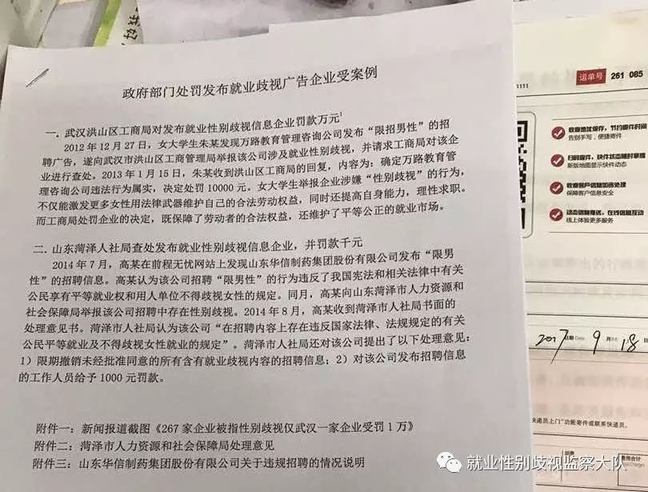
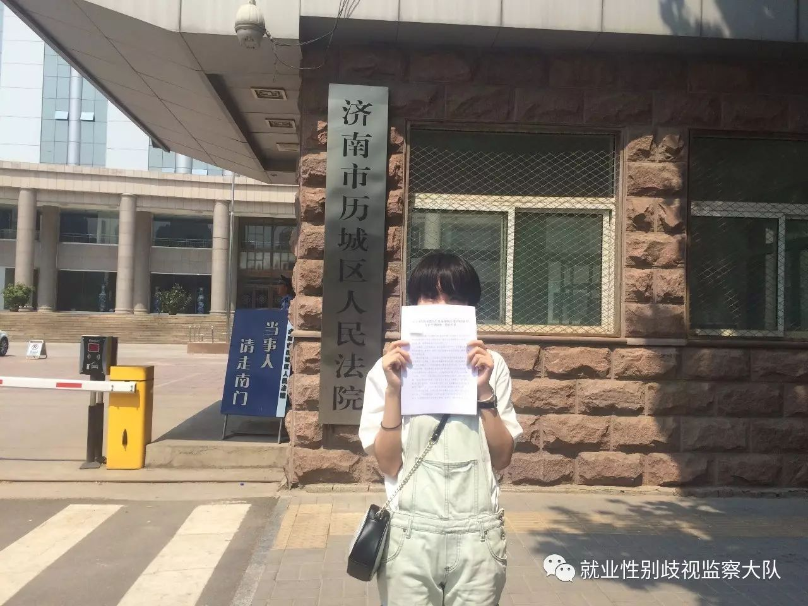

2016年12月8日，女大学生夏南向济南市历城区人社局举报山东福骋汽车贸易有限公司（下称“福骋公司”）在招聘财务经理时标注“优秀男士优先”，于是她向济南市历城区人力资源和社会保障局（下称“人社局”）举报该公司的性别歧视，要求人社局予以查处。
夏南之所以向人社局举报，一是基于她朴素的认识，她觉得这是针对女性的就业歧视，二是她了解到根据《就业促进法》和其他相关法律，人社局有监管就业性别歧视的职责。
人社局回复称该职务确有此要求，但不存在性别歧视。夏南不满此回复，于是向法院起诉人社局。此案在最近进行了两次公开审理，双方进行了激烈的辩论。
9月18日，山东就业性别歧视第一案律师将一些补充材料寄给法官，以对人社局的两个观点进行补充说明。资料包括律师的代理意见、就业平等的相关法律法规以及两个针对发布就业性别歧视招聘广告企业处罚的案例。

（补寄材料）
争议一
夏南并未到福骋公司应聘，所以该招聘信息对夏南的权利义务未产生实质影响。同时，人社局认为他们的回复并没有对夏南的权利与义务造成影响，不属于具体行政行为。因此，夏南没有权利进行起诉。
夏南的律师对此进行如下反驳：首先，夏南作为一个应届毕业生，在求职过程中，发现福骋公司的招聘信息出现涉嫌歧视女性的条件，这对她是否有进一步的求职行为有直接的影响。同时，举报涉嫌性别歧视的招聘信息也是公民的义务，夏南在履行自己的义务。
其次，《山东省劳动和社会保障监察条例》规定山东省县级以上劳动和社会保障行政部门有“受理对违反劳动和社会保障法律、法规行为的检举或者控告”的职责。这说明人社局受理夏南的举报是职责，对夏南的答复也是其履行职责的行政行为。夏南对人社局的答复不满，当然有权对此行政行为进行诉讼。
《山东省劳动和社会保障监察条例》
第十一条 劳动和社会保障行政部门履行下列监察职责:
（二）监督检查用人单位遵守劳动和社会保障法律、法规的情况；
（三）受理对违反劳动和社会保障法律、法规行为的检举或者控告；
（四）依法纠正和查处违反劳动和社会保障法律、法规的行为
争议二
人社局认定“优秀男士优先”，并非否认优秀女士优先，也并非就是在其他条件一致的情况下录用男性不录用女性。
人社局引用了国际公约：“我国现行法律没有明确歧视的标准，国际劳工组织1958年通过的《就业与职业歧视公约》中界定：基于种族、肤色、性别……的任何区别、排斥或特惠，其效果为取消或损害职业方面的机会平等或待遇平等。”并指出，“歧视就是不平等看待，也就是偏见，偏见进一步就会发展为歧视。”
西南财经大学法学院副教授何霞认为，根据我国签署的国际劳动组织第111号公约对就业性别歧视界定的三种情形——排斥、区别对待和优惠。“优秀男士优先”为男性就业提供了优惠，构成性别歧视。“优秀”把对男性的偏向给掩盖和模糊了，会有人说“优秀”是“优秀人士优先”。
任何人从字面理解都可以看出，“优秀男士优先”突出的是男性这一特定性别。虽然该公司用了“优秀”一词来做限定，但还是基于性别的区分，性别仍是该公司招聘时的考虑因素。通过这一限定，公司对女性的应聘者予以区别对待，损害了女性在求职过程的机会平等，符合人社局引用的《消除就业与职业歧视公约》中歧视的构成。
以建议性、软性限制的方式建议男性人员报考，同样达到排斥女性的效果，同样损害了就业机会均等，符合歧视的构成。招聘信息只需写明具体的职位要求即可，只有当性别是真实的职业资格的时候才需要标明，并需作出解释。
我国现有的法律中没有明确规定歧视的定义，但我国签订并批准参与的国际公约《消除就业与职业歧视公约》以及《消除对妇女一切形式歧视公约》等公约中对此有明确且相似规定。这揭示了国内有关反歧视的立法不足，显示了出台专门的反就业歧视法的必要性。
《消除对妇女一切形式歧视公约》
第一条 为本公约的目的，“对妇女的歧视”一词指基于性别而作的任何区别、排斥或限制，其影响或其目的均足以妨碍或否认妇女不论已婚未婚在男女平等的基础上认识、享有或行使在政治、经济、社会、文化、公民或任何其他方面的人权和基本自由。
争议三
人社局认定招聘时“优秀男士优先”不是性别歧视，会带来怎样的影响？
福骋公司自行删除招聘信息、录用女职工，这并不能掩盖就业歧视行为已经构成的事实。而且，福骋公司是在历城区人社局介入调查后，才有了这些行为，这说明人社局的监管对企业有很大的影响。
人社局作为劳动就业领域的主管行政机关，其作出的监管行为和答复均有示范作用。人社局竟认定“优秀男士优先”如此明显的区别对待不属于性别歧视。其他公司可能参照这一标准制定招聘条件，这不仅会损害求职女性的权益，也会对就业市场的稳定造成不利影响。
2015年，全国妇联妇女研究所在北京等地多所高校的调查显示，高达86.6%的女大学生受到过一种或多种招聘性别歧视。
2017年，智联招聘发布的报告显示，22%的女性认为就业中性别歧视现象严重，比男性高出近8%。
在就业过程中，女性群体对性别歧视的感知更为强烈，遭遇性别歧视的情况也比男性更为严峻。举证难、胜诉难、赔偿低、成本高等原因，致使鲜少有女性通过法律等有效途径保护自己的就业平等权。至今，我国仅出现了四起典型的反就业性别歧视诉讼。
在这样的背景下，夏南起诉人社局的意义重大。这起案件显露出以人社局为代表的劳动监察部门在反就业性别歧视中的不足。而这也不仅是一起行政案件，更是女性作为主体争取就业平等权的有力进击。

（案件当事人）
点击“阅读原文”了解更多案件背景